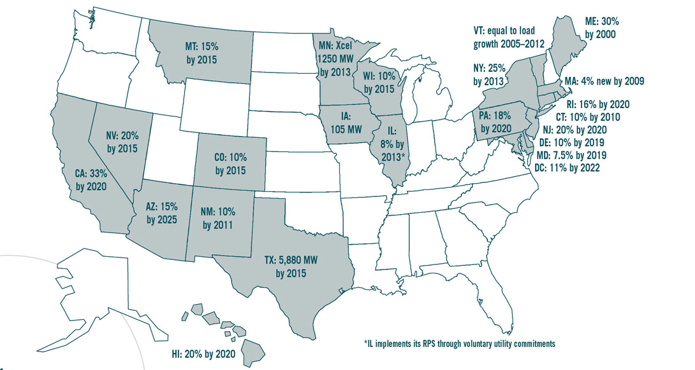

In the United States, there are many environmental policies, laws, and regulations at the federal, state, and local levels that affect sustainable businesses. Some of these are easy to understand and transparent to a large segment of the population. Others are not. For example, local, state, and federal tax credits (credit against taxes owed) for purchases of hybrid vehicles, home weatherization, and renewable energy use are pretty simple to understand—many individuals and households are aware of these policies, and these policies affect sustainable businesses. In contrast, renewable portfolio standards (see the following for a detailed discussion) are not easy to understand, and only a small segment of the population are aware of these policies.“Supportive Public Policies,” The Sustainable Scale Project, http://www.sustainablescale.org/AttractiveSolutions/SupportivePublicPolicies.aspx#four.
Environmental policies have developed over time, and they have been supported by both Democratic and Republican administrations in Washington, DC, and also in state houses and local governments across the nation. The start of significant federal government involvement with the environment was the early twentieth century conservation movement, associated with President Theodore Roosevelt. During this period in 1905, the Forest Service was established and it is still an agency of the US Department of Agriculture. The Forest Service acts as a steward over some of the nation’s most treasured natural resources. The Forest Service manages public lands in national forests and grasslands. Gifford Pinchot, the first chief of the forest service, summed up the mission of the Forest Service as “to provide the greatest amount of good for the greatest amount of people in the long run.”US Forest Service, http://www.fs.fed.us/aboutus/.
The origins of the modern environmental movement occurred over half a century later with the publication of Rachel Carson’s controversial Silent Spring in 1962, which pointed out the perils of pesticide use and rallied concern for the environment. This was the precursor to what became known in the United States as the environmental decade. On January 1, 1970, President Richard M. Nixon signed the National Environmental Policy Act (NEPA). NEPA created the Council on Environmental Quality, which oversaw the environmental impact of federal actions. Later in the year, Nixon created the Environmental Protection Agency, which consolidated environmental programs from other agencies into a single entity. The Environmental Protection Agency (EPA) is a public authority that can be thought of as assuming some ownership of the atmosphere to help to protect it. The legislation during this period was concerned primarily with pollutants in the air, surface water, groundwater, and solid waste disposal. Air pollutants, such as particulates, sulfur dioxide, nitrogen dioxide, carbon monoxide, and ozone, were put under regulation and restricted use.
The standards that the EPA put into place called mainly for state implementation. Each state prepared state implementation plans (SIPs), requiring EPA approval, and each state had to request permits from the EPA to emit pollution into any surface water. Congress also provided for a massive public works program to assist in the construction of water and waste treatment plants for municipalities. The 1970 Clean Air Act also enacted deadlines and penalties for automobile emission standards in new cars, resulting in the development and adoption of catalytic converters and other new energy efficiency enabling technologies.
Since the environmental movement of the 1970s, the focus of environmental issues has changed. While the initial emphasis was on conventional air and water pollutants, which were the most easily measurable, newer issues are long-term problems that are not easily discerned and can be surrounded by controversy, such as global climate change.
Underlying the policy decisions made by the United States is the concept of risk control, consisting of two parts: risk assessment and risk management. The science behind risk assessment varies greatly in uncertainty and tends to be the focus of political controversy. For example, animal testing is often used to determine the toxicity of various substances for humans. But assumptions made about expected dosage and exposure to chemicals are often disputed, and the dosage given to animals is typically much larger than what humans normally consume. While industry groups tend to take a risk-tolerant position, environmentalists take a risk-averse position, following the precautionary principle.
Another issue is the effect that chemicals can have relative to lifestyle choices. Cancer, for example, typically surface decades after first exposure to a carcinogen, and lifestyle choices can be more important in causing cancer than exposure to chemicals. The governmental role in mitigating lifestyle-choice risks can be very controversial, such as was the case with smoking in the United States and threats to American household use of private automobiles that contribute to pollution that affects population health. The threat to the latter can come if gasoline taxes were to be significantly increased in the United States to levels closer to those in European nations.
Finally, the way that threats are presented to the public plays a large role in whether those threats are addressed or not. During the administration of President Jimmy Carter (1976–80), the United States undertook a risk-averse policy, acting through the EPA and Council on Environmental Quality (CEQ) to research and control the pollutants suspected to cause acid deposition even in the face of scientific uncertainty. The Reagan administration (1980–88) was more risk tolerant. It argued that, given the scientific uncertainties about harm and exposure levels, new expenditures should not be undertaken that could curtail economic growth. During George H. W. Bush’s presidential campaign (1988), he called for new Clean Air Act legislation to curtail sulfur- and nitrogen-dioxide emissions. In 1990, after he was elected, amendments to the Clean Air Act were passed that cut emissions by more than twelve million tons per year, set up a market-like system of emissions trading, and set a cap on emissions for the year 2000. These goals were achieved to some degree by the installation of industrial scrubbers.
While the initial costs in cutting emissions levels were expected to be more than $4.6 billion for utilities and a 40 percent rise in electricity costs, the impact ended up being only about $1 billion and a 2 percent to 4 percent rise in electricity costs. Part of the reason for the relatively low costs is the availability of low-sulfur coal and new technologies to cut emissions at lower costs than anticipated.
Since the major environmental legislation of the 1970s was enacted, great progress has been made in some areas and progress has been more limited in other areas. On the progress side, between 1970 and 1996, air pollutants declined 32 percent while the population grew by 29 percent. There has been less progress made in addressing concerns about global climate change as was highlighted in the chapter on the science of sustainability. One reason of this is concern for the potential costs of addressing global climate change.
The overall cost of environmental regulation currently in the United States is estimated to be about 2 percent of the gross domestic product. This is similar to many other countries, but calculating the cost is challenging both conceptually (deciding what costs are included) and practically (with data from a broad range of sources).Wikipedia, s.v., “Environmental Policy of the United States,” last modified February 23, 2012, http://en.wikipedia.org/wiki/Environmental_policy_of_the_United_States#cite_note-5. Critics of environmental legislation argue that the gains made in environmental protection come at too great a cost. The cost of meeting OSHA workplace exposure standards, for example, can be as high as $3 million per life-year for benzene protection in Coke and coal factories or $51 million per life-year for arsenic protection in glass manufacturing plants. The benefits of environmental and energy programs are also hard to fully quantify. So while cost-benefit analysis is important to try to determine the net economic consequence of policies, and it is frequently used, the analysis can be very difficult. The challenges include quantifying all the benefits and identifying all the affected parties.
Cost-benefit analysis is done to determine how well economically, or how poorly, a considered action, such as public policy, will turn out. The analysis finds, quantifies, and adds all the positive factors. These are the benefits. Then it identifies, quantifies, and subtracts all the negatives, the costs. The difference between the two indicates whether the considered policy is advisable on a net economic basis. The challenge to doing a cost-benefit analysis well is making sure you include all the costs and all the benefits and properly quantify them.
Cost-benefit analysis does not take into consideration the distribution of costs or benefits, does not consider noneconomic factors, nor does it address nonquantifiable factors.
Environmental issues, such as air quality and acid rain, began to influence energy policy in the last decades of the twentieth century, and this is increasingly the case in the United States and other nations. The interaction of climate change and energy production and consumption requires closer links between environmental and energy policies. More recently, environmental and energy policies are also being linked with economic policy (see the following).
The objectives at the intersection of environmental, energy, and economic policies include
In 2010, reflective of President Obama’s interest in policy actions at the intersection of the environment, energy, and economy was his administration’s posting on their official website“Clean Energy Economy Fact Sheet,” The White House, http://www.whitehouse.gov/the_press_office/Clean-Energy-Economy-Fact-Sheet. of the following:
The nation that harnesses the power of clean, renewable energy will be the nation that leads the 21st century. Today, we export billions of dollars each year to import the energy we need to power our country. Our dependence on foreign oil threatens our national security, our environment and our economy. We must make the investments in clean energy sources that will put Americans back in control of our energy future, create millions of new jobs and lay the foundation for long-term economic security.
After a comprehensive energy bill that included a cap-and-trade market on greenhouse gas emissions failed in the US Senate in 2010, President Obama determined that “climate change policy would have to be achieved in smaller chunks.”Timothy Gardner, “Obama Sets 2035 Clean Electricity Target,” Environmental News Network, http://www.enn.com/environmental_policy/article/42276. These “chunks” proposed by the Obama administration included
While President Obama directed pointed action at oil companies, in general, he sought a centrist message on energy issues that had sharply divided the discussion on energy, saying nuclear power and two fossil fuels, clean coal and natural gas, would be needed to meet a goal of 80 percent clean energy in fewer than twenty-five years. “Some folks want wind and solar. Others want nuclear, clean coal, and natural gas,” Obama said. “To meet this goal, we will need them all and I urge Democrats and Republicans to work together to make it happen.”Timothy Gardner, “Obama Sets 2035 Clean Electricity Target,” Environmental News Network, http://www.enn.com/environmental_policy/article/42276.
As of 2012, there was no federal cap-and-trade program for greenhouse gas emissions in the United States; however, as discussed previously, the Clean Air Act amendment of 1990 created a successful federal cap-and-trade program for sulfur dioxide and nitrogen oxides. Three regional cap-and-trade initiatives have started: the Regional Greenhouse Gas Initiative (RGGI) in the Northeast; Western Climate Initiative (WCI) along the west coast; and the Midwestern Greenhouse Gas Reduction Accord (MGGA) in the central United States. The twenty-four states involved in the three initiatives include over 50 percent of the US population and 40 percent of overall carbon dioxide emissions.Based on 2005 carbon dioxide emissions provided by the US Environmental Protection Agency, states that have signed on to participate in a regional cap-and-trade program emitted 2.399 billion metric tons of carbon dioxide out of total US emissions of 5.996 billion metric tons of carbon dioxide.
Table 3.2 Regional GHG Cap-and-Trade Initiatives in the United States as of December 2010
| Initiative | Participating States |
|---|---|
| Regional Green House Gas Initiative (RGGI) | Connecticut, Delaware, Maine, Maryland, Massachusetts, New Hampshire, New Jersey, New York, Rhode Island, Vermont |
| Midwestern Greenhouse Gas Reduction Accord (Accord) | Illinois, Iowa, Kansas, Michigan, Minnesota, Wisconsin |
| Western Climate Initiative (WCI) | Arizona, California, Montana, New Mexico, Oregon, Utah, Washington |
| Individual state programs | Florida |
An example of one of the regional initiatives is the Regional Greenhouse Gas Initiative (RGGI), which is an agreement among ten Northeast and mid-Atlantic states to participate in a cap-and-trade program to reduce carbon dioxide (CO2) emissions from fossil-fueled power plants (plants that use coal, oil, or natural gas). The total cap set for the ten states participating in RGGI was initially set at 188 million tons annually. Total annual emissions in the RGGI states cannot exceed the annual cap from 2009 to 2014 and then must fall by 2.5 percent per year through 2018, so that by 2019 they must be at least 10 percent below the projected 2009 level.
A large majority of US states have renewable portfolio standards (RPS) or the equivalent and these standards are helping to drive the demand for new renewable energy. In addition, federal legislation has been proposed that requires electric utilities to meet 20 percent of their electricity demand through renewable energy sources and energy efficiency by 2020, and the enabling policy mechanism in the legislation is a federal RPS. However, currently there is no federal RPS.
Table 3.3 Examples of RPS Legislation by State
| State | Year Enacted | Preliminary Target | Final Target | Credit Trading Allowed? |
|---|---|---|---|---|
| Arizona | 2001 | 0.2% by 2001 | 15% by 2025 | No |
| California | 2002 | 13% by 2003 | 33% by 2020 | Yes |
| Colorado | 2004 | 3% by 2007 | 10% by 2015 | Yes |
| Connecticut | 1998 | 4% by 2004 | 10% by 2010 | Yes |
| Delaware | 2005 | 1% by 2007 | 10% by 2019 | Yes |
| Washington, DC | 2005 | 4% by 2007 | 11% by 2022 | Yes |
| Hawaii | 2004 | 7% by 2003 | 20% by 2020 | No |
| Illinois | 2005 | 2% by 2007 | 8% by 2013 | No |
| Iowa | 1991 | None | 105 MW | No |
| Maine | 1999 | None | 30% by 2000 | Yes |
| Maryland | 2004 | 3.5% by 2006 | 7.5% by 2019 | Yes |
| Massachusetts | 1997 | 1% new by 2003 | 4% new by 2009 | Yes |
| Minnesota | 1997 | 1,125 MW by 2010 | 1,250 MW by 2013 | No |
| Montana | 2005 | 5% by 2008 | 15% by 2015 | Yes |
| Nevada | 1997 | 6% by 2005 | 20% by 2015 | Yes |
| New Jersey | 2001 | 6.5% by 2008 | 20% by 2020 | Yes |
| New Mexico | 2002 | 5% by 2006 | 10% by 2011 | Yes |
| New York | 2004 | None | 25% by 2013 | Yes |
| Pennsylvania | 2004 | 1.5% by 2007 | 18% by 2020 | Yes |
| Rhode Island | 2004 | 3% by 2007 | 16% by 2020 | Yes |
| Texas | 1999 | 2,280 MW by 2007 | 5,880 MW by 2015 | Yes |
| Vermont | 2005 | None | Load growth by 2012 | Yes |
| Washington | 2006 | 3% by 2012 | 15% by 2020 | Yes |
| Wisconsin | 1999 | None | 10% by 2015 | Yes |
| Note: MW = Megawatts. | ||||
Source: Barry G. Rabe, Race to the Top: The Expanding Role of U.S. State Renewable Portfolio Standard (Arlington, VA: Pew Center on Global Climate Change, 2006).
Figure 3.3 Map of RPS Activity
Source: Barry G. Rabe, Race to the Top: The Expanding Role of U.S. State Renewable Portfolio Standard (Arlington, VA: Pew Center on Global Climate Change, 2006).
Even with the environmental decade of the 1970s and the initiatives of the Obama administration, many countries are well ahead of the United States with public policies to address global warming and other sustainability concerns.
The Kyoto ProtocolAdopted in 1997 in Kyoto, Japan, as an international effort by world leaders to address global carbon dioxide emissions. adopted in 1997 in Kyoto, Japan, is an example of an international effort by world leaders to address global carbon dioxide emissions. It illustrates the complex economic, social, political, and technical challenges embedded in addressing GHG emissions globally. For instance, the Kyoto Protocol, among other items, set binding targets for thirty-seven industrialized countries and the European community for reducing GHG emissions over a five-year period from 2008 to 2012.Kyoto Protocol, http://unfccc.int/kyoto_protocol/items/2830.php.
Although the United States is the second largest emitter of GHG, it is not a participant in the Kyoto Protocol. One hundred and ninety-one countries including China (as a developing country) have signed and ratified participation in the treaty. The Kyoto Protocols, however, are set to expire in 2012 and there is little optimism for a new treaty.
The United States has had varying support for participation in international agreements to address climate change. Vice President Al Gore was a main participant in putting the Kyoto Protocol together in 1997. President Bill Clinton signed the agreement in 1997, but the US Senate refused to ratify it, citing potential damage to the economy and job loss and that it excluded some developing countries from having to comply with the standards. George W. Bush made campaign promises in 2000 to regulate carbon dioxide as a pollutant. However, in 2001, he withdrew the United States from the Kyoto agreement as one of the first acts of his presidency. Bush believed that the Kyoto Protocol was too costly and would harm the US economy. Affecting the policy landscape was the general resistance among those who questioned the validity of the science behind global warming. And even among strong supporters of the need to take action on climate change, there is resistance to participate in global agreements. In the Cancun Climate Change meeting in November 2010, representatives from the Obama administration insisted that before signing off on a global agreement that fast-emerging economies, such as India and China, commit to reducing emissions and to an inspection process that will verify those actions.
European countries have been leaders in addressing global warming. Many of the European nations have very limited fossil fuel of their own and have high costs of energy so that measures to increase energy efficiency and to develop renewable energy make good environmental, and also very good economic, sense. Germany and Spain are global leaders in wind power. Portugal in 2010 will get 45 percent of its energy from renewable sources. By 2025, Ireland, Denmark, and Britain will get 40 percent or more of their electricity from renewable sources. In contrast, the United States in 2009 generated less than 5 percent of its power from newer forms of renewable energy and has a current target for 2025 to reach 16 percent (or just over 20 percent, including hydroelectric power).
European nations increased use of renewable sources has been supported by public policies. In the early 1990s, Scandinavian countries were the first nations to introduce a CO2 tax.Wikipedia, s.v., “Carbon Tax,” last modified April 4, 2012, http://en.wikipedia.org/wiki/Carbon_tax#cite_note-65. More recently, in 2007, the Netherlands introduced a waste fund that is funded by a carbon-based packaging tax. This tax encourages producers to create packaging that is recyclable and was implemented to help reach the goals of recycling 65 percent of used packaging by 2012.Wikipedia, s.v., “Carbon Tax,” last modified April 4, 2012, http://en.wikipedia.org/wiki/Carbon_tax#cite_note-83.
Extended Producer Responsibility
The European continent has also been the leader in extended producer responsibility (ERP). ERP is policy to promote total life cycle environmental improvements of product systems by extending the responsibilities of the manufacturer products to various parts of the product’s life cycle and especially to the take back and final disposal of the product. A principal reason for allocating responsibility to producers is their capacity to make changes at the source to reduce the environmental impacts of their product throughout its life cycle. It is essentially the producers that decide the features of the products they manufacture at the design phase of products. Rational manufacturers, when made responsible for end-of-life management of their products financially or physically, would presumably try to find a way to minimize the costs associated with end-of-life management by changing the design of their products. The establishment of such feedback loops from the downstream (end-of-life management) to the upstream (design of products) is the core of the EPR principle that distinguishes EPR from a mere take back system. Assigning responsibility primarily to one actor would also avoid the situation where everyone’s responsibility becomes no one’s responsibility.
While most of the European nations have been ahead of the United States in trying to address climate change with public policies, it was much more recently that some leading Asian nations have begun to take initiatives. With its rapidly growing economy and industrialization, China passed the United States as the world’s largest emitter of greenhouse gases in 2006. That milestone came not only because of China’s rapid growth and industrialization but also because of its heavy reliance on coal, an especially dirty fossil fuel in terms of emission of gases contributing to global climate change.
Under scrutiny globally, Chinese president Hu Jintao in 2009 called for China to reduce its carbon emissions per unit of economic output by 40 percent to 45 percent by 2020, compared with 2005 levels. China has started to move away from fossil fuels. In 2010, China along with other Asian nations that were initially slow to respond to climate change—Japan and South Korea—increased support of money into research and development of clean technologies. Because of these strategic investments, China is positioned to emerge as a global clean tech leader and perhaps diminish the United States’ chances of capitalizing on clean tech manufacturing jobs and the fruits of technological innovation.Joan Melcher, “Throwing the Race for Green Energy,” Miller-McCune, March 18, 2010, http://www.miller-mccune.com/business-economics/throwing-the-race-for-green-energy-10976.
However, even with research and development investments and even if China meets its energy efficiency goal this year and its carbon goal by 2020, its total carbon emissions are still on track to rise steeply in the next decade; according to forecasts by the International Energy Agency, that is because of factors including rapid growth in the Chinese economy, growing car ownership, and rising ownership of household appliances.Keith Bradsher, “In Crackdown on Energy Use, China to Shut 2,000 Factories,” New York Times, August 9, 2010, http://www.nytimes.com/2010/08/10/business/energy-environment/10yuan.html?scp=1&sq=china%20closes%20plants&st=cse.
Understanding government is not only for political science majors. Government and public policies have strong impact on all businesses. It is important for sustainable business owners and managers to understand government policies, their objectives, and how they are implemented. The best approach for many sustainable businesses in their relations with government is to be interactive and when appropriate to partner with government to achieve desired social objectives, such as stewardship of the environment.
This chapter has highlighted public policy programs and concepts that are especially important for businesses that are focused on sustainability.
The Gulf of Mexico British Petroleum (BP) oil spill of 2010 is the largest oil spill in the history of the United States. While the spill was most directly linked to British Petroleum’s drilling practices, the role of government, both before and after the spill, has come into question following the accident. To some the spill reflected that the industry had taken over a regulatory agency, so the agency acquiesced to industry interests. To others it represented how government had failed, both in its role to prevent the spill and in its inadequate response to the spill. Many factors contributed to this apparent government failure and the subsequent environmental damage.
Regulations passed by the government may have contributed to short-sighted decision making within BP. After the Exxon Valdez spill in 1989, the US Congress capped an oil company’s financial liability for a spill (over and above the cleanup costs) at $75 million.David Leonhart, “Spillonomics: Underestimating Risk,” New York Times, June 1, 2010, http://www.nytimes.com/2010/06/06/magazine/06fob-wwln-t.html?emc=eta1. Although BP, accepting responsibility for the spill, eventually waived the cap, this law could have contributed more to BP (and other oil companies) undertaking riskier drilling practices than if a liability cap had been in place. Without a cap, BP may have more closely weighed the potential revenue of drilling against the possible costs associated with a spill.
Another aspect of the government failure was related to conflicts of interest. Many federal employees experienced conflicts of interest associated with the oil business in years leading up to the spill. This was specifically the case at the Minerals Management Service (MMS), which is the federal agency under the US Department of the Interior that managed the US oceanic oil resources prior to the spill. US government auditors had warned of corrupt operations within the MMS that suggested inappropriate relationships and interactions with members of the oil industry. In particular, MMS personnel were found to have accepted gifts from oil company employees.John M. Broder, “Reforms Slow to Arrive at Drilling Agency,” New York Times, May 30, 2010, http://www.nytimes.com/2010/05/31/us/politics/31drill.html?pagewanted=1. Another source of conflict of interest was with the lawmakers on the congressional committees that oversaw the MMS. Some committee members represented states in which oil companies had a significant economic presence and members of the Senate Energy and Natural Resource Committee, for example, received, on average, double the amount of campaign support from the oil and gas industry as did other members of the Senate.John M. Broder and Michael Luo, “Reforms Slow to Arrive at Drilling Agency,” New York Times, May 30, 2010, http://www.nytimes.com/2010/05/31/us/politics/31drill.html?pagewanted=1.
The MMS seemingly ignored federal regulations surrounding oil drilling compliance. The National Environmental Policy Act (NEPA) was enacted to ensure that federal agencies completed thorough and adequate assessments before approving projects that carried significant environmental risk, including offshore drilling. The MMS, however, had been bypassing this regulation and granting hundreds of drilling permits without due process. Specifically, the well associated with the Gulf spill was granted exemption from the NEPA process because BP officials ensured that the well was safe.John M. Broder and Helene Cooper, “Obama Vows End to ‘Cozy’ Oversight of Oil Industry,” New York Times, May 14, 2010, http://www.nytimes.com/2010/05/15/us/politics/15obama.html?pagewanted=1&sq=Obama%20Vows%20End%20to%20’ Cozy’%20Oversight%20of%20Oil%20Industry&st=cse&scp=1.
The management of former MMS director Elizabeth Birnbaum has also come into question after the oil spill. She did very little during her one-year term to solve the issues of corruption and inefficiency at the MMS. Many staff members, especially at remote offices, claim to never have even seen her during her term. Birnbaum had very little experience in the oil and gas industry before she took office. Her lack of experience with the industry may have contributed to the agency’s inattention to regulations.Gardiner Harris, “Crisis Places Focus on Beleaguered Agency’s Chief,” New York Times, May 25, 2010, http://www.nytimes.com/2010/05/26/us/politics/26birnbaum.html.
The government also received criticism for how it responded after the incident. In fact, one poll cited that two-thirds of Americans viewed the government’s actions negatively, a higher percentage than a similar poll in the aftermath of Hurricane Katrina.Andy Barr, “Poll: Oil Response Worse than Katrina,” Politico, http://www.politico.com/news/stories/0610/38246.html. Many critics argued that the government relied too heavily on BP’s assessment of the spill and the company’s suggested methods for cleanup. However, analysts suggest that neither party could have completed the task on its own. The government required the assistance of BP’s available equipment and BP needed the government’s scientific expertise and logistical management.“‘Cap-and-Trade’ Model Eyed for Cutting Greenhouse Gases,” San Francisco Chronicle, December 3, 2007. Consequently, collaboration was crucial to the success of cleanup efforts.
The 2010 Gulf oil spill exposed many organizational problems and concerns within the agencies managing offshore drilling. The MMS was described as having a “culture of lax oversight and cozy ties to [the oil] industry.”“‘Cap-and-Trade’ Model Eyed for Cutting Greenhouse Gases,” San Francisco Chronicle, December 3, 2007; Ian Burbina, “Inspector General’s Inquiry Faults Regulators,” New York Times, May 24, 2010, http://www.nytimes.com/2010/05/25/us/25mms.html?scp=1&sq=Inspector%20General%20Faults%20Minerals%20Manage ment%20Service&st=cse. In response to this criticism and the many others during the spill, the US government chose to reorganize the MMS into a new agency—the Bureau of Ocean Energy Management, Regulation, and Enforcement. It is hoped that this will lead to reforms that will help to prevent some of the government failures in the BP oil spill.Bureau of Ocean Energy Management, Regulation, and Enforcement, “Salazar Swears-In Michael R. Bromwich to Lead Bureau of Ocean Energy Management, Regulation and Enforcement,” news release, http://www.mms.gov/ooc/press/2010/press0621.htm.
In 2011, a Chinese environmental group accused Apple and the company’s Chinese suppliers of discharging polluted waste and toxic metals into surrounding communities and threatening public health. The group, the Institute of Public and Environmental Affairs in Beijing, released a forty-six-page report documenting what it said was pollution from the dozens of “suspected” Apple suppliers throughout China.
The report, which the group said was based on visits to many of the factories’ regions, said that factories that the group suspected were Apple suppliers often “fail to properly dispose of hazardous waste” and that twenty-seven of the suppliers had been found to have environmental problems. Also, earlier in 2011, Apple acknowledged that 137 workers at a Chinese factory near the city of Suzhou had been seriously injured by a toxic chemical used in making the signature slick glass screens of the iPhone.
An Apple spokesman said that the company had been aggressively monitoring factories in its supply chain with regular audits.
“Apple is committed to driving the highest standards of social responsibility throughout our supply chain. We require that our supplier provide safe working conditions, treat workers with dignity and respect, and use environmentally responsible manufacturing processes wherever Apple products are made.”
Supply chain experts say brand-name companies generally do a better job of monitoring and auditing their supply chain than smaller companies in China. But most experts agree that while conditions have improved at many work sites, labor violations and the discharge of toxic waste continue to be major problems.